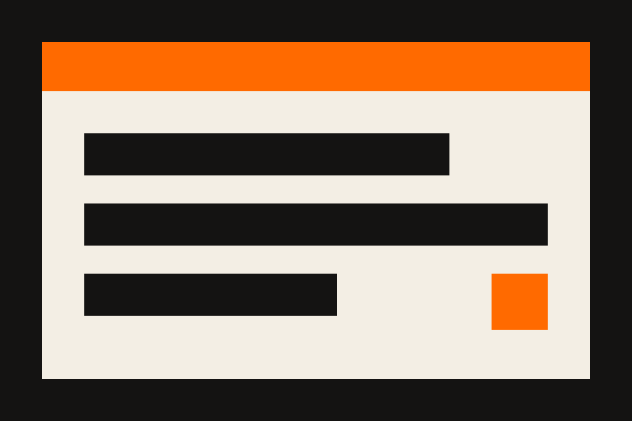
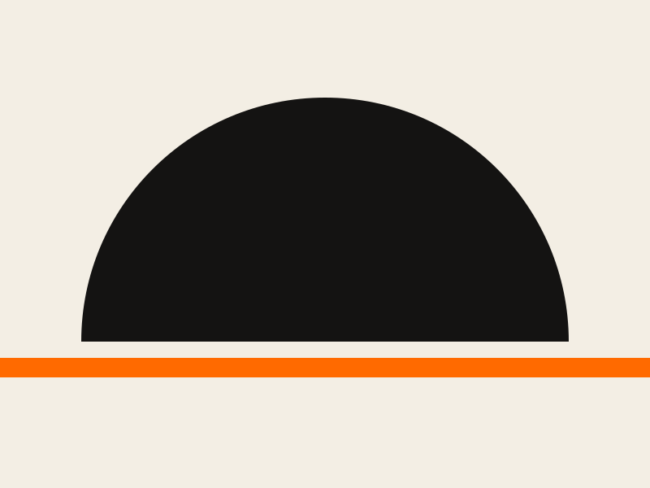
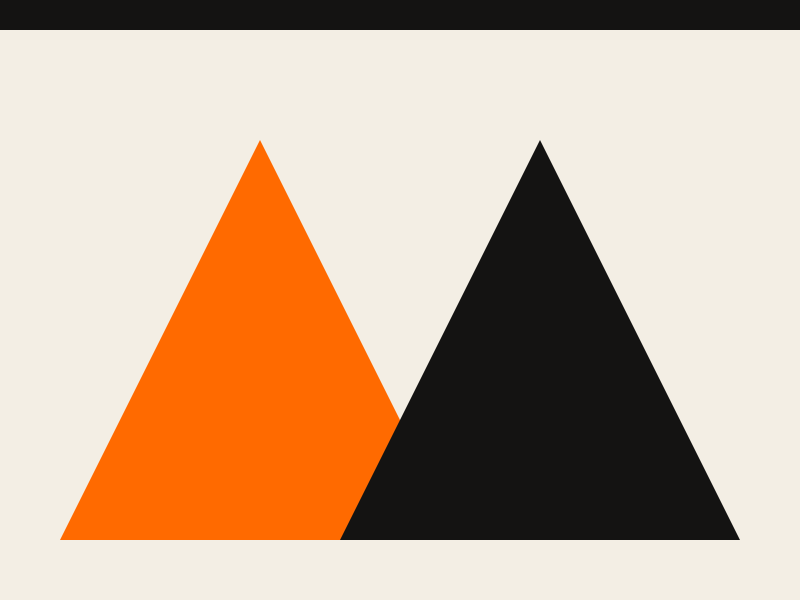
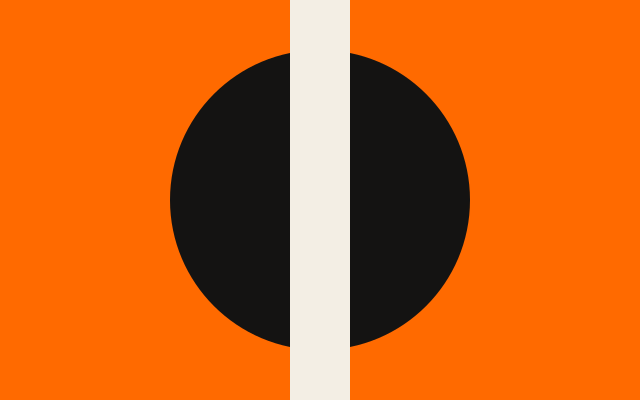
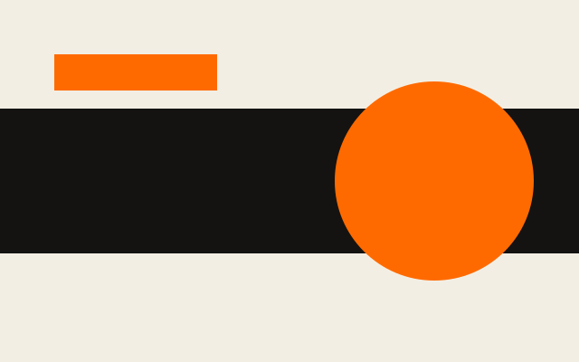

css/
Two stylesheets
theme.css holds the tokens, the palette and the one orange; global.css holds every rule that uses them. Nothing else loads but the fonts.
Full width. Two colours. One typeface.
ExtraExtra is a poster wall: paper and black type by day, black and orange by night, hard rules, no corners, no shadows, and a condensed face set in capitals as large as the page allows. The markup is the same as every other retemplate template. Only the stylesheets and the art shout.
Two stylesheetsOne script, 47 linesZero build stepsThree fontsRules 2px, bars 10pxCorners 0Shadows noneContrast 5.6 to 1 on paperContrast 6.8 to 1 on black
Take css/, js/theme.js and assets/ and you have the whole template; everything else on this page exists to show it. These three are ordinary cards with the extraextra-poster class: no box, a bar on top, the title a size up.
css/
theme.css holds the tokens, the palette and the one orange; global.css holds every rule that uses them. Nothing else loads but the fonts.
Schemes
The type inverts, the rules invert, and the orange stays exactly where it is. The toggle in the corner cycles auto, light and dark, and remembers the choice.
Retoken
The palette block in theme.css is a retoken theme as written. The border slot is the ink, so retoken's own components rule in the same weight. See the tokens.

The orange
Bright orange fails the contrast check for small type on paper, so it is a band colour and never a text colour. Links use a burnt orange that passes on paper; after dark the bright orange passes on black and becomes the accent. The band you are reading is the bright one.
Read the paletteEight bills, pasted edge to edge with the ink showing between them. Click one and the lightbox opens in reverse; the arrows are plain links, the close button is a form, and Esc closes it.






Horizontal cards put the picture on the left or, with card-media-end, on the right, ruled off from the words. Below 30rem they stack.

Every template ships two layouts. The second puts the index down the left; the orange bar stays on top.

Headings to footnotes, tables to task lists, all through .prose, with the headings in capitals.
Every template has one feature card with an effect that suits it. ExtraExtra's is a two-colour print: hover it, or tab into the link, and the picture drops to one ink with an orange plate over it while the words flood orange.

The plate is a pseudo-element with mix-blend-mode: multiply, so this is the same card markup as every card above. Nothing moves; the colour changes.
Accordions are native <details> elements set as ruled rows. Give a group the same name and opening one closes the others, with no script. The marker is a plus on an orange square that turns.
Copy the folder, link the two stylesheets and the one script, and write HTML. The pages open from disk.
Anton for everything in capitals, Barlow for the body, IBM Plex Mono for labels, data and the ticker. Remove the <link> and Impact, your system sans and your system mono take over; the bands and rules carry the look on their own.
The template relies on light-dark(), :has(), popovers, exclusive accordions and mix-blend-mode. No polyfills.
A single accordion stands on its own.
css/, js/theme.js, assets/ and the README. Everything else in the folder is showcase and can go.
The data table has a second setting. Add extraextra-times to the wrapper and it prints like the board by the door: mono figures, the first column in capitals, a bar under the head and no box. The ordinary ruled table is on the table page.
| Component | Element | Rule | Script | Docs |
|---|---|---|---|---|
| Accordion | details | 2px | none | accordion |
| Lightbox | dialog | 2px | one line | gallery |
| Navbar | header | 2px | none | navbar |
| Ticker | div | 2px | none | flare |
| Toggle | button | 2px | theme.js | theme |
Dialogs are native too. The button opens one; the dialog closes itself through a form, traps focus while open, and the page behind it goes orange.
Buttons are capitals in a ruled box: the default is an outline, the primary is ink, and both go orange when pressed. The shout is ExtraExtra's own, the one call on a page set in display type. The switch is a square slider. Badges are stamps; banners are ruled strips with a thick edge.
The strip is the banner's full-bleed setting, for the one notice a page must not let you miss.
After dark
Dark mode is not a second design. The paper goes black, the type goes paper, every rule inverts with it, and the orange bands do not move. Every colour is a light-dark() pair in one file; this band is the ink colour, so in the dark scheme it is the one paper band on the page.
Most pages are prose, so .prose styles every construct a markdown renderer produces: headings in capitals over rules, square bullets with orange markers, quotes behind an orange bar, code in a ruled box, tables with a reversed head, footnotes. The blog post runs the full test document through these rules; defaults shows every bare element.
A poster has one job: to be read from across the street. Everything on it is either the message or the margin.